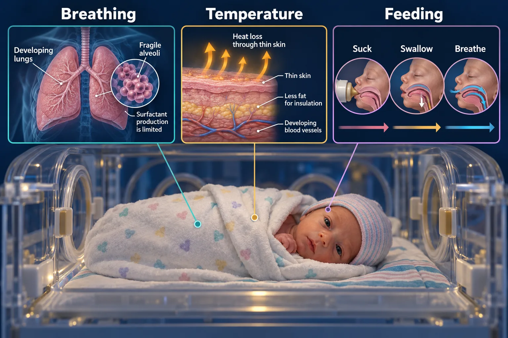

ABSN STUDY HUB · VISUAL STUDY CARD
Complications of prematurity

Course labels and notes from the original graphic, arranged into readable sections. The illustration is schematic.
Course overview
THE PRETERM NEWBORN — WHAT FAILS, AND WHERE
- Everything immature at once. Four systems, four problems, four different signs.
✅ THE PRIORITY ORDER AT DELIVERY
- 1
- Airway, breathing
- 2
- Warmth
- 3
- Glucose
- 4
- Gentle handling
WHERE EACH PROBLEM IS
IVH · RDS · NEC · °C
- brain
- lungs
- gut
- skin
IVH — intraventricular hemorrhage
- Fragile vessels round the ventricles bleed. Bulging fontanelle, seizures, sudden anemia, apnea. Handle gently, head midline, no rapid position changes.
RDS — respiratory distress syndrome
- Not enough surfactant, so alveoli collapse each breath. Grunting, nasal flaring, retractions, tachypnea. Surfactant down the ETT, CPAP. Long O2 → BPD.
NEC — necrotizing enterocolitis
- Immature gut wall becomes ischemic and dies. Distended shiny abdomen, bilious residual, bloody stool. NPO immediately, OG tube to suction, no rectal temps.
Cold stress — she cannot warm herself
- No brown fat, huge surface area, no shivering. Cold → hypoglycemia → acidosis, in that order. Radiant warmer, hat, skin to skin, warm everything you touch her with.